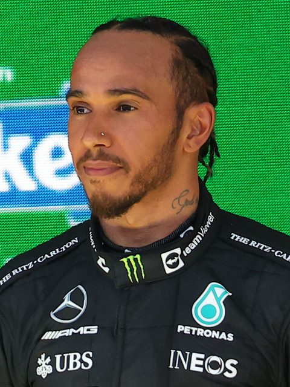
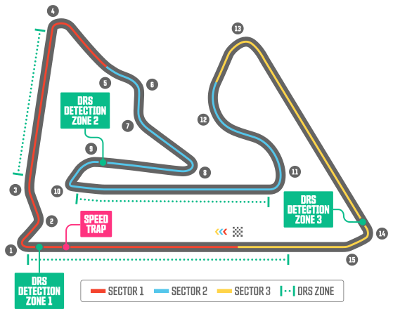
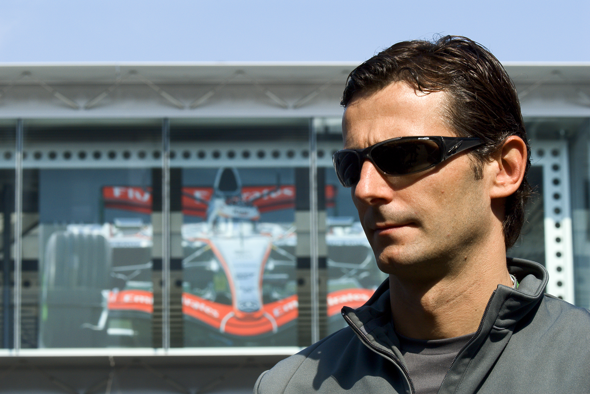
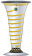
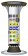

Bahrain International Circuit
Bahrain International Circuit
Todavía no se ha disputado esta carrera. Vuelve tras el fin de semana de carrera para ver tiempos por vuelta y diferencias.This race hasn't happened yet - check back after the race weekend for lap times and gap charts.Cette course n'a pas encore eu lieu. Revenez après le week-end de course pour voir les temps au tour et les écarts.
Sobre el Gran PremioAbout the Grand PrixÀ propos du Grand Prix
Sedes de este Gran PremioThis Grand Prix's venuesSites de ce Grand Prix
| CircuitoCircuitCircuit | AñosYearsAnnées |
|---|---|
| Bahrain International Circuit | 2004-2010, 2012-2025 |
| Sepang International Circuit | 2026 |
Piloto con más victorias en el GPDriver with most GP winsPilote avec le plus de victoires au GP

FotoPhotoPhoto: Beto Issa/F1 GP São Paulo 2022 (CC BY 2.0)Lewis Hamilton (5)
Escudería con más victorias en el GPConstructor with most GP winsÉcurie avec le plus de victoires au GP

Ferrari (7)
Sobre el circuitoAbout the circuitÀ propos du circuit
El circuitoThe circuitLe circuit

FotoPhotoPhoto: ごひょううべこ (CC BY-SA 3.0)En uso desdeIn use sinceUtilisé depuis 2004
15 curvascornersvirages
5.412 km / 3.363 mi
Récord de vueltaLap recordRecord du tour

FotoPhotoPhoto: madaz1962 (CC BY 2.0)1:31.447 · Pedro de la Rosa (McLaren, 2005)
RondaRoundManche 1 · Gran Premio de BaréinBahrain Grand PrixGrand Prix de Bahreïn · 2027-03-14
Parrilla vigente esta temporada:Current-season lineup:Grille actuelle de la saison :
 McLaren Mastercard F1 Team · MercedesNOR: Lando Norris (4)
McLaren Mastercard F1 Team · MercedesNOR: Lando Norris (4) PIA: Oscar Piastri (81)
PIA: Oscar Piastri (81) Mercedes-AMG Petronas F1 Team · Mercedes
Mercedes-AMG Petronas F1 Team · Mercedes ANT: Andrea Kimi Antonelli (12)RUS: George Russell (63)
ANT: Andrea Kimi Antonelli (12)RUS: George Russell (63) Oracle Red Bull Racing · Red Bull Ford
Oracle Red Bull Racing · Red Bull Ford VER: Max Verstappen (3)
VER: Max Verstappen (3) HAD: Isack Hadjar (6)Scuderia Ferrari HP · Ferrari
HAD: Isack Hadjar (6)Scuderia Ferrari HP · Ferrari LEC: Charles Leclerc (16)HAM: Lewis Hamilton (44)Atlassian Williams F1 Team · Mercedes
LEC: Charles Leclerc (16)HAM: Lewis Hamilton (44)Atlassian Williams F1 Team · Mercedes ALB: Alexander Albon (23)
ALB: Alexander Albon (23) SAI: Carlos Sainz (55)Visa Cash App Racing Bulls F1 Team · Red Bull FordAston Martin Aramco F1 Team · Honda
SAI: Carlos Sainz (55)Visa Cash App Racing Bulls F1 Team · Red Bull FordAston Martin Aramco F1 Team · Honda TGR Haas F1 Team · FerrariAudi Revolut F1 Team · AudiHUL: Nico Hülkenberg (27)
TGR Haas F1 Team · FerrariAudi Revolut F1 Team · AudiHUL: Nico Hülkenberg (27) BOR: Gabriel Bortoleto (5)Gucci Racing Alpine F1 Team · MercedesGAS: Pierre Gasly (10)
BOR: Gabriel Bortoleto (5)Gucci Racing Alpine F1 Team · MercedesGAS: Pierre Gasly (10) COL: Franco Colapinto (43)Cadillac F1 Team · Ferrari
COL: Franco Colapinto (43)Cadillac F1 Team · Ferrari PER: Sergio Pérez (11)
PER: Sergio Pérez (11) BOT: Valtteri Bottas (77)
BOT: Valtteri Bottas (77)Clasificación actualCurrent standingsClassement actuel
Ya no puede ser campeón del mundo, aun sumando todos los puntos que quedanMathematically out of the title fight, even scoring every point still availableN'a plus aucune chance d'être champion du monde, même en marquant tous les points restantsEntre paréntesis: títulos mundiales ya ganadosIn brackets: world titles already wonEntre parenthèses : titres mondiaux déjà remportés
| # | PilotoDriverPilote | PuntosPointsPoints |
|---|---|---|
| 1 | Andrea Kimi Antonelli | 320 |
| 2 | George Russell | 236 |
| 3 | Lewis Hamilton (7  ) | 214 |
| 4 | Charles Leclerc | 191 |
| 5 | Lando Norris (1) | 188 |
| 6 | Max Verstappen (4) | 188 |
| 7 | Oscar Piastri | 128 |
| 8 | Isack Hadjar | 96 |
| 9 | Liam Lawson | 65 |
| 10 | Pierre Gasly | 41 |
| 11 | Arvid Lindblad | 38 |
| 12 | Franco Colapinto | 27 |
| 13 | Oliver Bearman | 20 |
| 14 | Gabriel Bortoleto | 10 |
| 15 | Nico Hülkenberg | 7 |
| 16 | Esteban Ocon | 7 |
| 17 | Fernando Alonso (2) | 7 |
| 18 | Carlos Sainz | 7 |
| 19 | Alexander Albon | 5 |
| 20 | Yuki Tsunoda | 1 |
| 21 | Lance Stroll | 0 |
| 22 | Valtteri Bottas | 0 |
| 23 | Sergio Pérez | 0 |
| # | ConstructorConstructorÉcurie | PuntosPointsPoints |
|---|---|---|
| 1 | Mercedes (8  ) | 556 |
| 2 | Ferrari (16) | 405 |
| 3 | McLaren (10) | 316 |
| 4 | Red Bull (6) | 298 |
| 5 | Racing Bulls | 90 |
| 6 | Alpine | 68 |
| 7 | Haas | 27 |
| 8 | Audi | 17 |
| 9 | Williams (9) | 12 |
| 10 | Aston Martin | 7 |
| 11 | Cadillac | 0 |